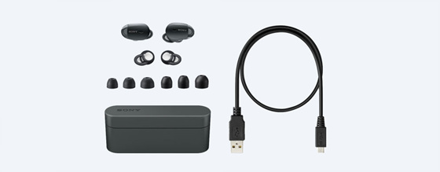

http://www.sony.co.kr/electronics/truly-wireless/wf-1000x
동생곰이 산걸 빌려서 사용해 봤습니다.
최근 무선 이어폰 / 헤드폰에 관심이 가던중이었는데
타이밍 좋게(?) 먼저 구매했더라구요 ^^
저는 인이어 이어폰을 사용못합니다;; 귓구멍이 너무 작아서.....OTL
불편하고 아파요 ;ㅂ;
하지만 인이어 란걸 제외하고는 너무 편하고 좋습니다
선이 없다는게 이렇게 편할줄이야;;
제 전화기가 오래된것이라 그런지(?) 배터리가 무섭게 빨리 닳지만(.....)
사람많은 지하철에서도 끊기지않고 잘 작동하더라구요
일할때도 늠 편해!!
하루종일 음악들으면서
이어폰 좋다 살까? → 근데 인이어..... → 하지만 선없으니까 겁나 편하다 → 살까? → 근데 인이어...
를 무한반복하고 있습니다 ^^;;;
밖에서 돌아다니다보면 예전에도 이렇게 까지 거리가 시끄러웠나 싶은게
소음이 너무 신경쓰여서;;
노이즈캔슬링 & 무선이어폰 에 급 관심을 갖게되면서 이것저것 찾아보고 있습니다
내가 늙은건가 아님 실제로 거리소음이 증가한것인가;;;